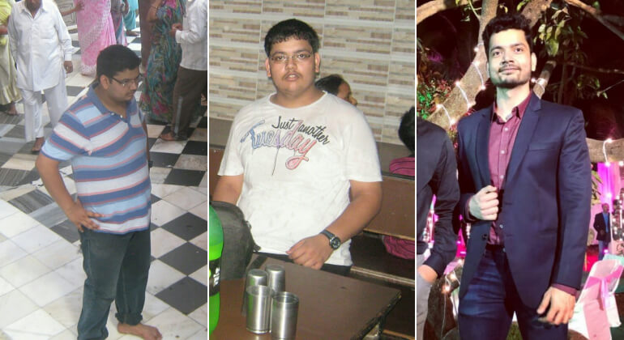

В Боливии серьезный прирост количества людей с лишним весом — каждый третий весит на 30% больше нормы. Есть все предпосылки, что боливийцы обгонят статистику американцев уже в 2024 году.
«Если не предпринять срочных мер, то в скором времени людей, страдающих ожирением, будет больше, чем голодающих. Вот такой вот парадокс» —
Прокомментировал проблему на ежегодной научно-практической конференции в Санта-Крус, разработчик уникального средства для похудения, интерн Udabol Medical University — Оливер Мартинез:
Этот суперфуд облегчит жизнь миллионам людей, которые не могут похудеть по разным причинам: лень, индивидуальные особенности организма, нехватка времени. Моя цель — доказать всем, процесс похудения может быть легким и эффективным, а такие методы, как диеты, тренировки и липосакция — всего лишь устаревшие заключения.
Наука не стоит на месте.
Современные технологии помогли мне разработать Black Latte, который поможет людям избавиться не только от лишнего веса, но и сопутствующих его депрессий и заболеваний.”
И это не просто громкие слова. Парень продемонстрировал эффект своей инновационной формулы на личном примере — минус 52 килограмма за 90 дней! Это средство точно достойно внимания!
Своим заявлением интерн приковал внимание всех присутствующих в зале и произвел настоящий фурор.
Однако за большим успехом стоит большая боль. Со слов самого Оливера эта разработка чуть не стоила ему жизни:
“Я был полным с самого детства, но никто этому не придавал значения. Семья мою полноту считала забавной. Родители вечно были заняты работой и я принадлежал только себе. Пончики, гамбургеры, содовая литрами — это был мой любимый рацион.
Я был аутсайдером в обществе сверстников. В школе я был чуваком №1 для отрыва и насмешек. Меня часто запирали в шкафу, кладовке или кабинке туалета, и мне приходилось подолгу кричать о помощи, пока охранник не обнаруживал меня.
С возрастом все только усугублялось. Я был одиночкой и даже перевелся на вечернее обучение, чтобы поменьше контактировать с однокурсниками. Учился и работал онлайн из дома. Моими лучшими друзьями были пиво, фастфуд и зверский аппетит.
Потихоньку я превратился в свинью. И мне даже не обидно так себя обзывать. Потому что вместо двух подбородков у меня было четыре. В складки на животе можно было прятать заначки денег, я вам честно говорю, при обыске бы не нашли ( Смеется — Прим. ред.). Дряблое тело тряслось от малейшего движения, которое вызывало страшную одышку. На третий этаж я подымался лифтом - боялся задохнуться.
Я понимал, что выглядел отвратительно, но каждый раз сильная тяга к еде брала верх над попытками сесть на диету или пойти на спорт.
Очнуться помог случай.
После очередного ночного обжорства мне стало дико плохо. Сейчас я говорю не о расстройстве желудка или простите, диареи. Резко застучало в висках, казалось голова будто взорвется через секунду, всю правую руку взяло судорогой. Ноги не слушались. Не знаю какие высшие силы помогли мне в ту минуту набрать скорую помощь, но если бы врачи приехали на несколько минут позже я вряд ли бы сейчас стоял перед вами (Зал ахнул — Прим. ред.).
Из-за высокого уровня сахара в крови у меня случился микроинсульт. Также мне диагностировали преддиабет. Хорошего мало, правда?!
После недолгой реабилитации в больнице я пошел на поправку и понял… Нужно что-то делать. Так как со спортом и диетами у меня не особо ладилось, я выбрал тот путь, в котором был более успешен. Я начал детально изучать липолиз — процесс естественного расщепления жировых клеток и вывел формулу напитка, который блокирует чувство голода и ускоряет сжигание жира в 17 раз.
Black Latte действует невзирая на образ жизни человека. Это значит не важно сидите вы или весь день на ногах или лежите на диване - вы все равно худеете. Такой эффект оказывает комбинация уникальных природных жиросжигателей разрывающих связи жировых клеток. Это обеспечивает быстрое уменьшение объемов тела. Кроме того Black Latte восстанавливает углеводный обмен, что стимулирует организм использовать больше запасов для выработки энергии. Это не дает лишним калориям откладываться на фигуре.
Первоиспытателем средства был лично я. В своем блоге я регулярно отчитывался подписчикам о результатах. Килограммы уменьшались, а количество моих фолловеров росло, как и сообщений с просьбами поделиться секретным методом похудения. Очень быстро обычная страница ничем неприметного парня набрала популярность и многомиллионную аудиторию благодаря этой разработке.
Мне не жалко! Когда мое средство прошло соответствующие проверки я организовал группу из 15ти человек для дополнительного исследования. Позитивная динамика наблюдалась у всех участников.
Результаты группы добровольцев после курса, а это 30 дней, приема Black Latte. За такой короткий период некоторым участникам удалось сбросить около 10-15 кг, что еще раз доказывает превосходство формулы Оливера над диетами и изнуряющими тренировками.
Если каждая попытка похудеть оборачивалась для вас неудачей - Black Latte - это то, что вам нужно. Помогло всем нам, и вам обязательно поможет!
Благодарю за внимание, и хочу сказать напоследок — следите за своим здоровьем и помните, что лишний вес — это не только лишь про красоту, — это про здоровье. Ментальное и физическое”.
После этого выступления неизвестный студент вмиг превратился в мировую знаменитость. Маститые ученые и академики стоя рукоплескали юному гению. Но и это еще не все!
“Black Latte — конкретный конкурент всем фармацевтическим компаниям выпускающих товары с нулевой эффективностью. Формула Оливера, несомненно предрекает прорыв в сфере пищевых добавок и я обещаю помочь молодому гению всем необходимым, чтобы это средство получило лицензию и продавалось во всем мире. А пока хочу выразить свою благодарность Оливеру за огромный вклад в развитие сферы пищевых добавок и вручить этот орден. Оливер, только вперед! Мы в тебя верим! ”
- завершила конференцию Мелисса Грунич, эксперт по контролю качества пищевых добавок.
Где купить Black Latte?
Оригинальный Black Latte можно заказать только на официальном сайте. В связи с высокой популярностью средства в сети появилось множество подделок, которые в лучшем случае никак не влияют на процесс похудения, а в худшем — опасны для здоровья.
Если вы хотите заказать настоящий напиток Black Latte, который поможет быстро сбросить вес без вреда для здоровья, нажмите на кнопку ниже. Вам нужно оставить заявку и указать контактные данные. Никакой предоплаты вносить не нужно — вы оплачиваете заказ при получении. Позаботьтесь о собственном здоровье — закажите Black Latte и получите тело мечты без хлопот.
Мы от души желаем Оливеру Мартинезу новых свершений и научных открытий и публикуем ссылку на официальный сайт Black Latte:
Ограниченное предложение
Специально для наших читателей Оливер Мартинез согласился предоставить эксклюзивную скидку от 20 до 50%! Испытай удачу и закажи Black Latte для похудения по специальной цене!
Акция действительна, пока товар есть на складе.
Осталось упаковок со скидкой 50%: 388 штук.